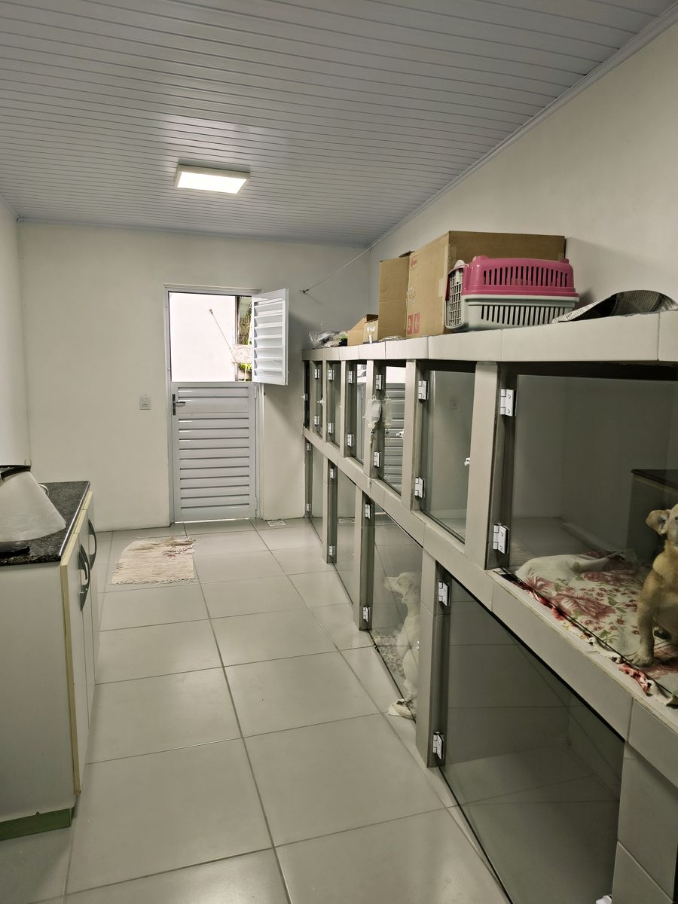
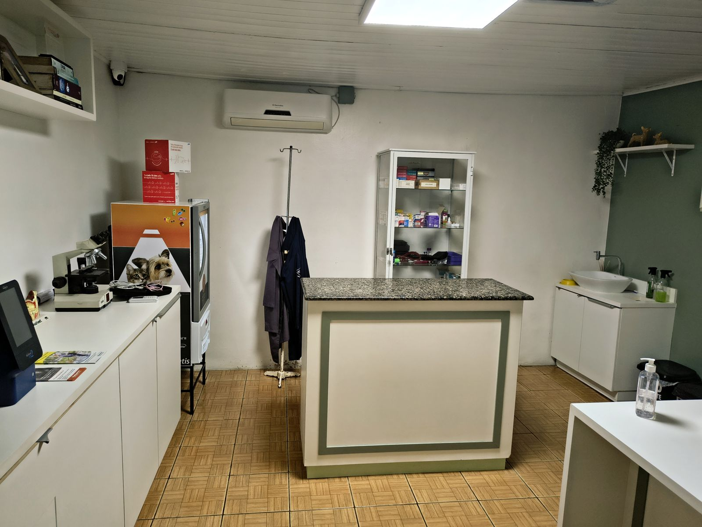
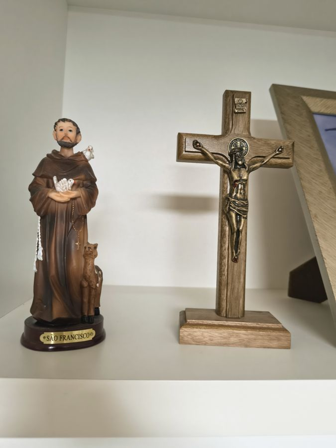

Cuidado para cães e gatos em Sombrio
No centro de Sombrio desde 2005: consulta, vacina, cirurgia, exames e banho e tosa no mesmo lugar, com pet shop na entrada.
O que o seu animal precisa hoje?
Escolha abaixo. Dá para agendar aqui mesmo ou mandar a mensagem pronta no WhatsApp.
As orientações acima precisam ser revisadas pela veterinária antes de publicar.

Serviços
Consultas
Exame clínico de cães e gatos, com encaminhamento ao ortopedista quando precisa.
Vacinas
Polivalentes (V8/V10) e antirrábica para cães, com a geladeira de vacinas controlada.
Cirurgias
Castração, retirada de nódulos, ortopedia e odontologia, com anestesia inalatória e monitoração.
Exames
Hemograma, bioquímico e teste rápido de FIV/FeLV feitos na própria clínica.
Raio-X e ultrassom
Exames de imagem feitos na própria clínica.
Internamento
Baias individuais para quem precisa de soro, medicação ou observação.
Banho e tosa
Banho, condicionamento e secagem no próprio prédio.
Pet shop
Ração, antiparasitários e acessórios na entrada da clínica.
Agendar horário
Escolha o serviço, o dia e o horário. A clínica confirma pelo telefone que você deixar. Prefere conversar? Agende pelo WhatsApp.
Pedido de horário feito
A clínica vai confirmar pelo telefone que você deixou. Neste protótipo o pedido não é enviado a ninguém.
A clínica por dentro

(a tirar)
(a tirar)
(a tirar)
Nossa história
“Começou como um consultório pequeno, porque era disso que a região precisava.”
A Mundo Animal foi aberta em 2005 pelo médico veterinário Rangel Ramos Cardoso. Ele se formou pensando em bois e cavalos, mas em Sombrio quem batia à porta eram cães e gatos. O consultório cresceu, ganhou laboratório, raio-X, ultrassom, internamento e banho e tosa, e virou referência na região.
Texto a aprovar pelo Rangel antes de publicar.

Onde estamos
- Endereço
- Avenida Antonio Sant’Helena, 165, Centro, Sombrio (SC), 88960-000
- Telefone
- (48) 99924-7977 confirmar
- Horário
- a confirmar com a clínica
- Urgências
- a clínica atende fora do horário? a confirmar
No centro de Sombrio, na Avenida Antonio Sant’Helena.